Hypothesis: Deletions at a TAD boundary cause the largest structural
change (TADs merge); deletions within a TAD body cause little change. Method: Predict WT once; for each deletion size and each of 12
evenly-spaced positions, simulate a deletion and compare to WT. Edward's actual insulator: chr12:27,333,532–27,336,455
(2,923 bp) — highlighted in red.
Metrics explained
• Mean |Δ contact| — total reorganisation; higher = more change.
• Cross-TAD contact gain — positive = domains merging.
• Insulation weakening — positive = boundary lost.
Cross-Size Comparison
How deletion size affects the spatial sensitivity pattern.
Top: global impact heatmap (position × size).
Middle: insulation weakening heatmap.
Bottom: rank of Edward's actual insulator at each deletion size.
Cross-size comparison for Edward chr12.
10 kb Deletions
Rank
Centre (bp)
Deletion range
Mean |Δ contact|
Cross-TAD gain
Ins. weakening
#1
27,334,993
27,334,993–27,344,993
0.10677 ⭐ ACTUAL
+0.14731
+0.45751
#2
26,822,753
26,822,753–26,832,753
0.03132
-0.00894
+0.00111
#3
26,914,978
26,914,978–26,924,978
0.03086
-0.00117
-0.00396
#4
27,007,203
27,007,203–27,017,203
0.02929
-0.00170
-0.01883
#5
27,099,429
27,099,429–27,109,429
0.02673
-0.00572
+0.00520
#6
27,191,654
27,191,654–27,201,654
0.02587
-0.00744
+0.00729
#7
27,283,880
27,283,880–27,293,880
0.02449
-0.01135
-0.03527
#8
27,468,331
27,468,331–27,478,331
0.01591
-0.00887
-0.01128
#9
27,560,556
27,560,556–27,570,556
0.01378
-0.01924
-0.03932
#10
27,652,782
27,652,782–27,662,782
0.00607
+0.00031
-0.00763
#11
27,745,007
27,745,007–27,755,007
0.00395
+0.00029
-0.00839
#12
27,837,233
27,837,233–27,847,233
0.00309
-0.01541
-0.02495
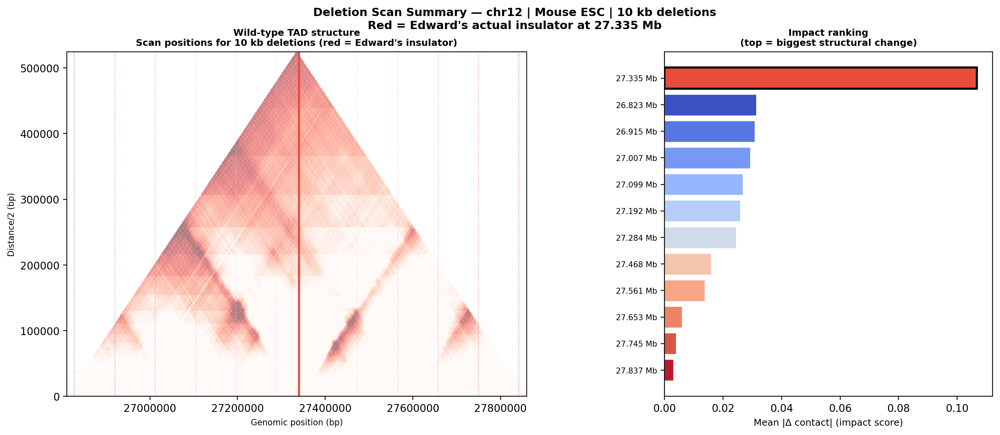WT triangle with 10 kb scan positions. Right: impact ranking.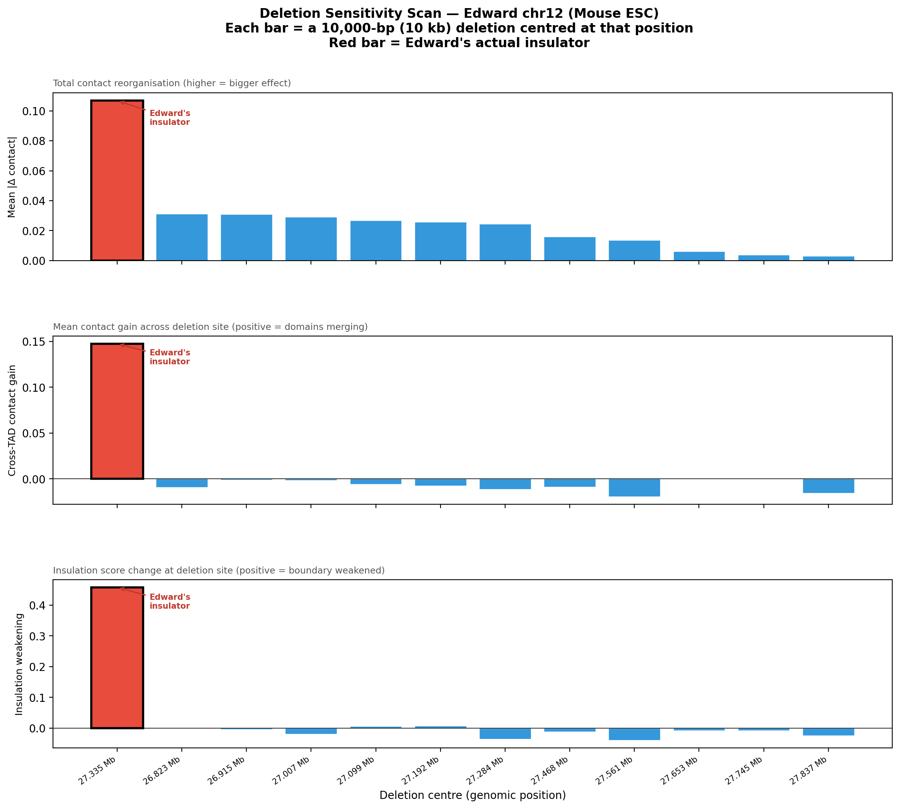Three metrics at each position for 10 kb deletions. Red bar = Edward's actual insulator.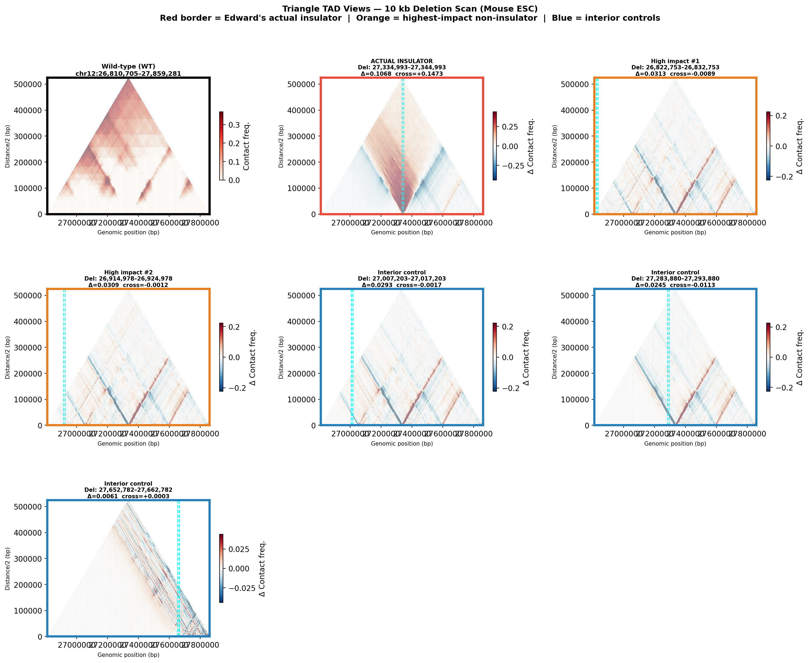Triangle difference maps for selected sites (10 kb deletions).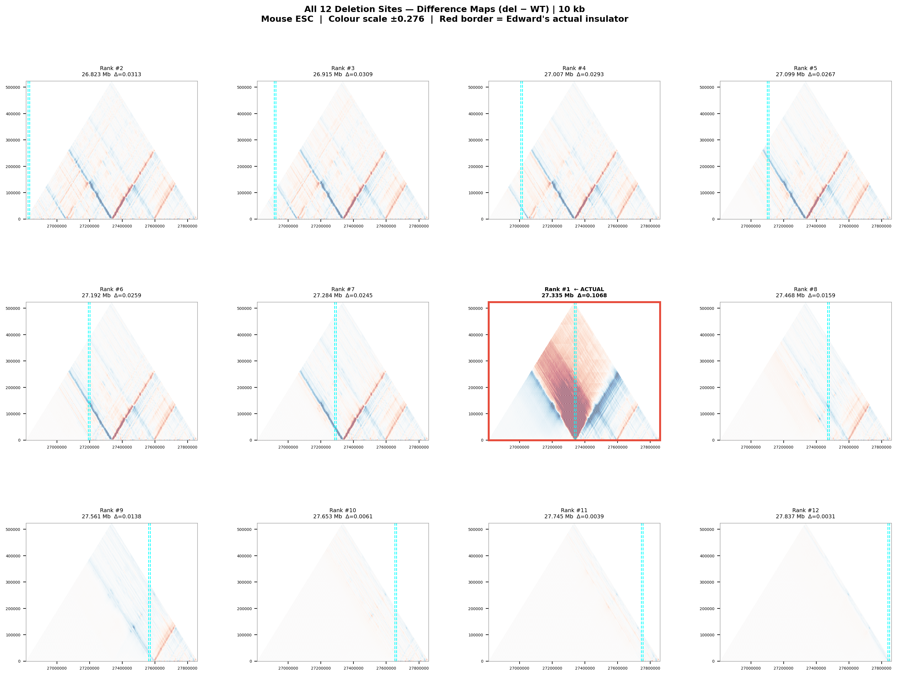All 12 sites — 10 kb deletions — shared colour scale.
40 kb Deletions
Rank
Centre (bp)
Deletion range
Mean |Δ contact|
Cross-TAD gain
Ins. weakening
#1
27,334,993
27,334,993–27,374,993
0.10421 ⭐ ACTUAL
+0.11737
+0.44881
#2
27,020,840
27,020,840–27,060,840
0.07842
+0.02186
-0.06186
#3
26,936,796
26,936,796–26,976,796
0.07569
+0.00127
+0.02857
#4
26,852,753
26,852,753–26,892,753
0.07550
-0.00841
-0.00227
#5
27,104,883
27,104,883–27,144,883
0.06721
-0.01946
-0.05073
#6
27,272,971
27,272,971–27,312,971
0.06610
-0.02965
-0.21282
#7
27,188,927
27,188,927–27,228,927
0.06541
-0.02006
+0.02359
#8
27,441,058
27,441,058–27,481,058
0.03658
-0.02410
-0.02451
#9
27,525,102
27,525,102–27,565,102
0.02650
-0.01986
-0.08078
#10
27,609,145
27,609,145–27,649,145
0.01052
+0.00748
+0.00554
#11
27,693,189
27,693,189–27,733,189
0.00935
-0.00564
+0.01661
#12
27,777,233
27,777,233–27,817,233
0.00605
+0.00267
-0.01487
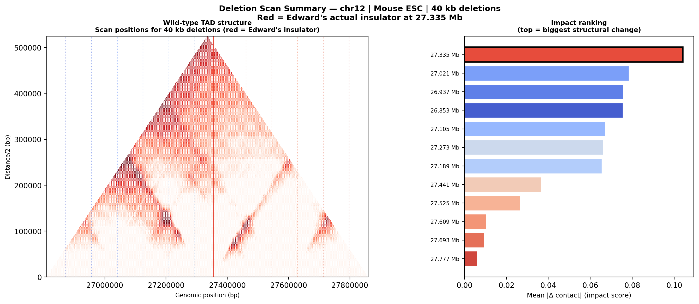WT triangle with 40 kb scan positions. Right: impact ranking.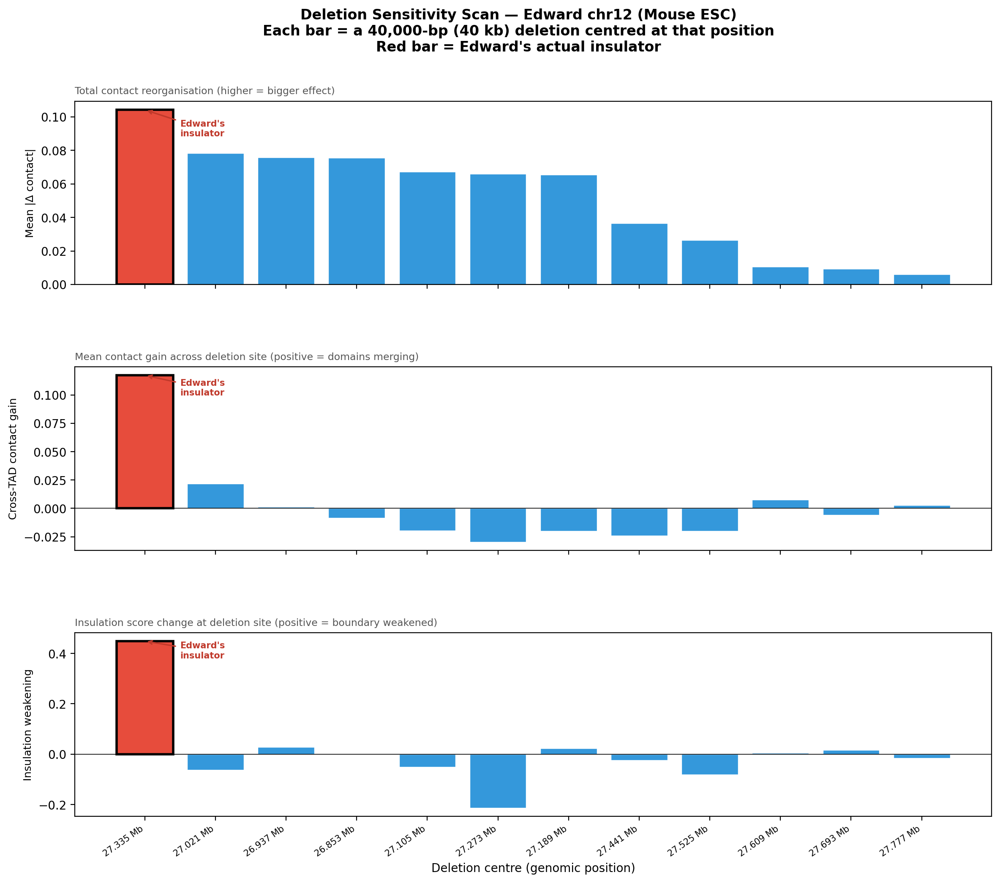Three metrics at each position for 40 kb deletions. Red bar = Edward's actual insulator.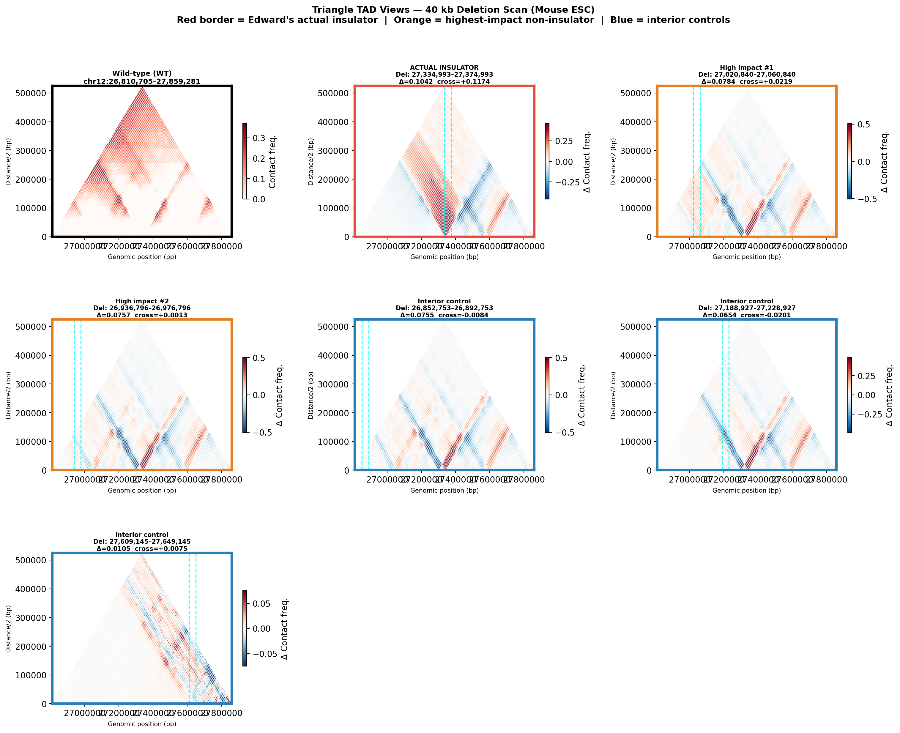Triangle difference maps for selected sites (40 kb deletions).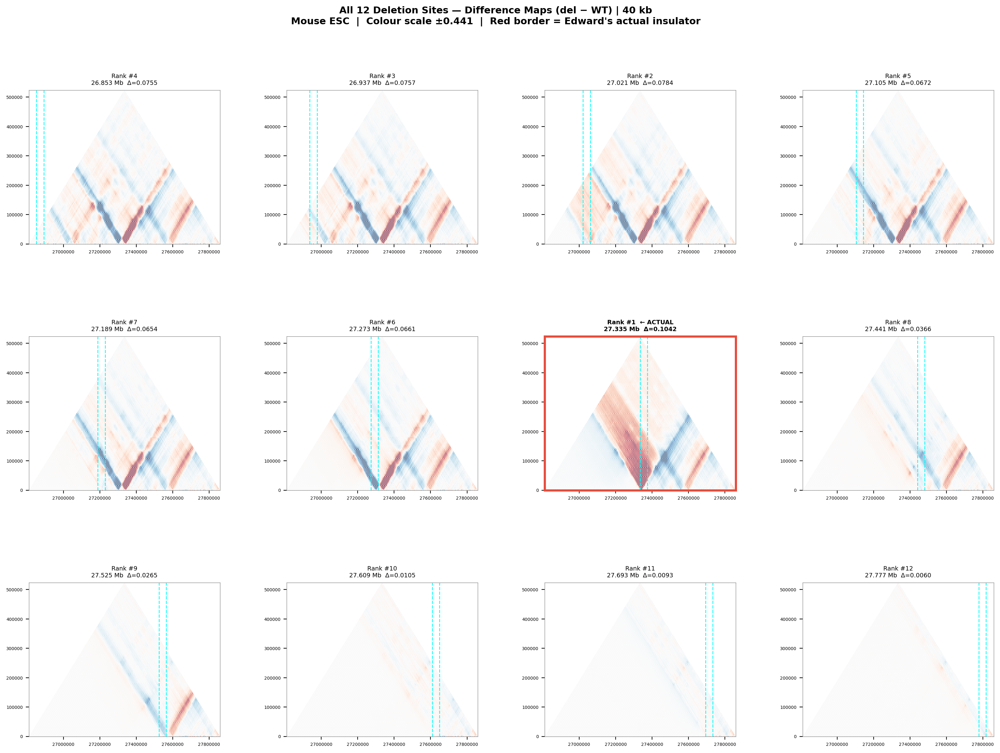All 12 sites — 40 kb deletions — shared colour scale.
80 kb Deletions
Rank
Centre (bp)
Deletion range
Mean |Δ contact|
Cross-TAD gain
Ins. weakening
#1
26,965,887
26,965,887–27,045,887
0.10772
-0.02084
-0.09471
#2
26,892,753
26,892,753–26,972,753
0.10711
-0.02037
+0.00609
#3
27,039,022
27,039,022–27,119,022
0.10241
+0.00425
+0.03987
#4
27,334,993
27,334,993–27,414,993
0.10230 ⭐ ACTUAL
+0.08531
+0.44669
#5
27,258,425
27,258,425–27,338,425
0.10018
-0.04707
-0.44191
#6
27,112,156
27,112,156–27,192,156
0.09700
-0.03220
-0.03197
#7
27,185,291
27,185,291–27,265,291
0.09511
-0.03511
+0.01600
#8
27,404,694
27,404,694–27,484,694
0.05690
-0.03676
-0.01728
#9
27,550,963
27,550,963–27,630,963
0.05584
+0.09296
+0.02513
#10
27,477,829
27,477,829–27,557,829
0.04614
-0.02667
-0.05754
#11
27,624,098
27,624,098–27,704,098
0.01180
-0.01003
-0.01270
#12
27,697,233
27,697,233–27,777,233
0.00935
-0.00607
+0.01676
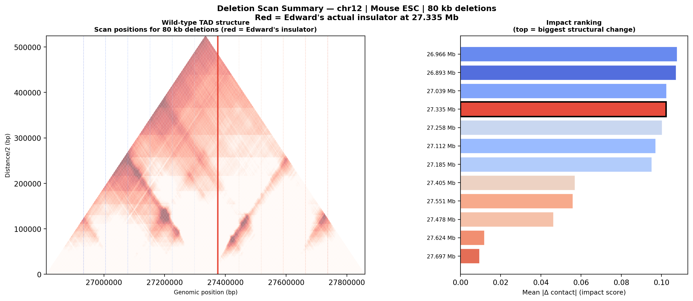WT triangle with 80 kb scan positions. Right: impact ranking.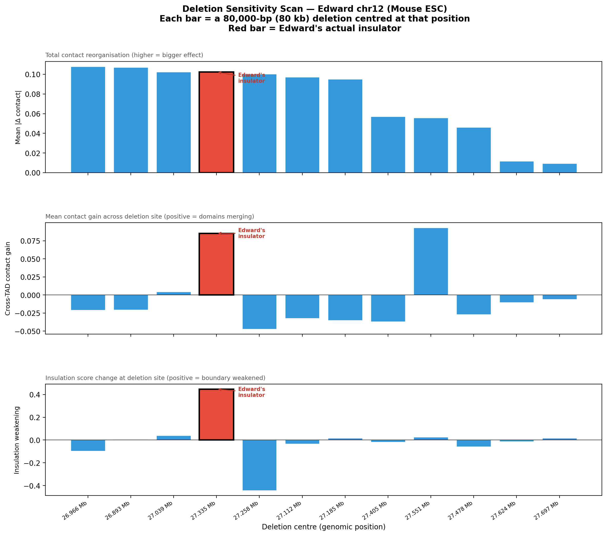Three metrics at each position for 80 kb deletions. Red bar = Edward's actual insulator.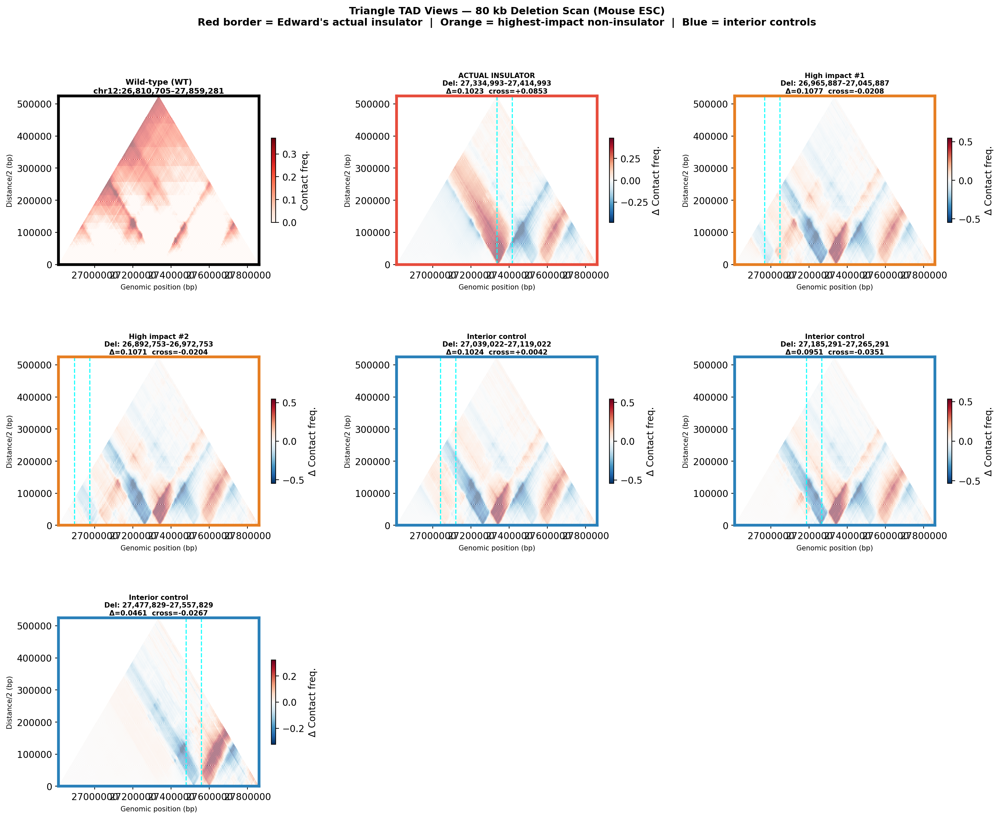Triangle difference maps for selected sites (80 kb deletions).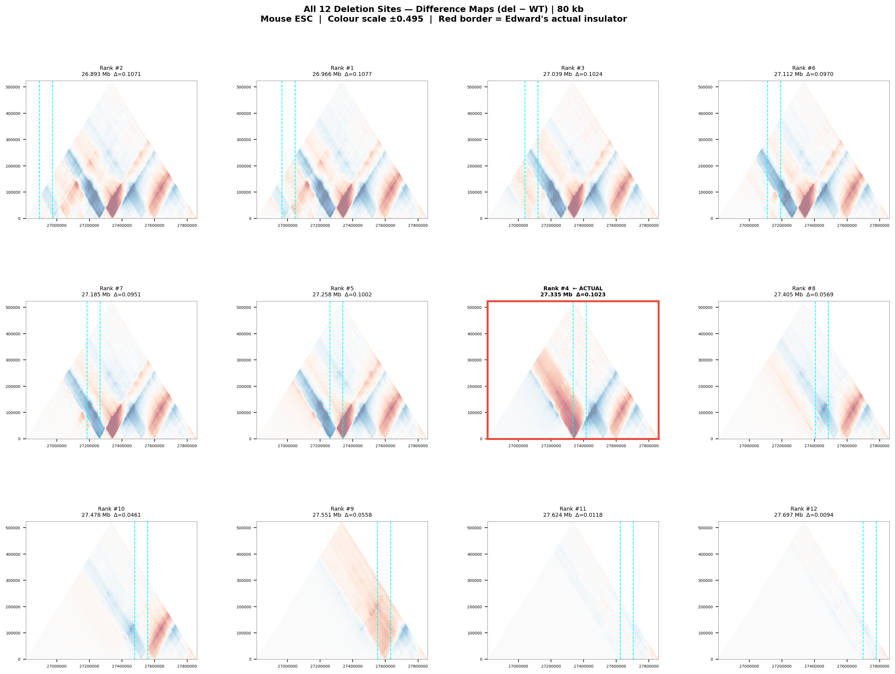All 12 sites — 80 kb deletions — shared colour scale.